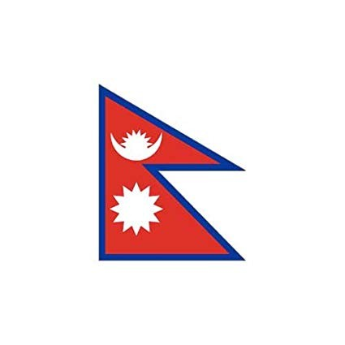
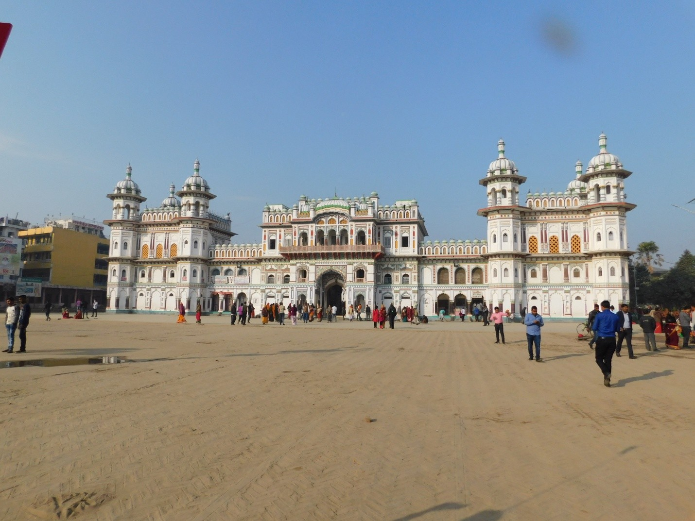
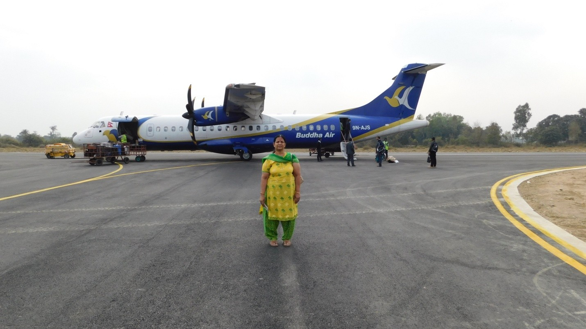
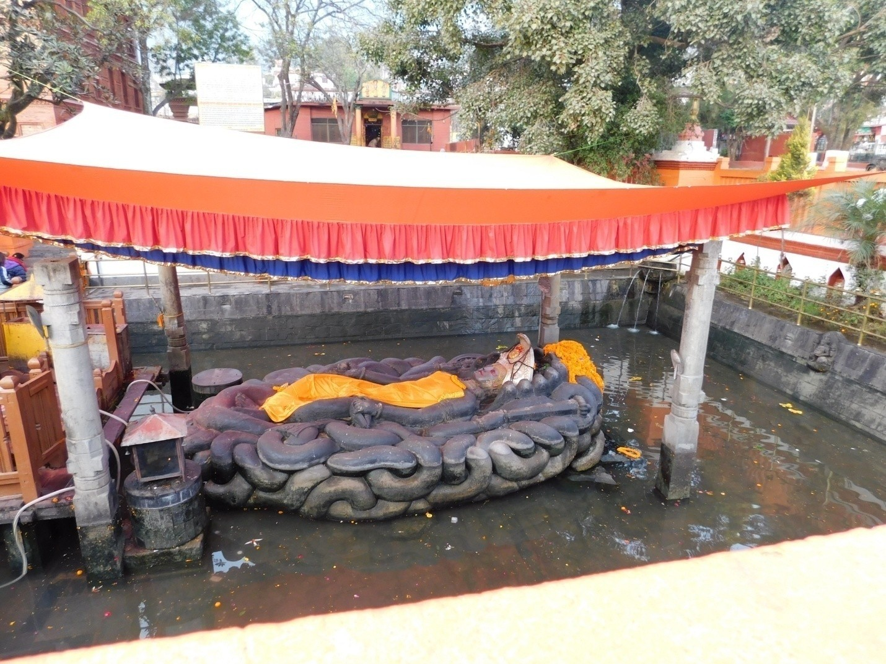
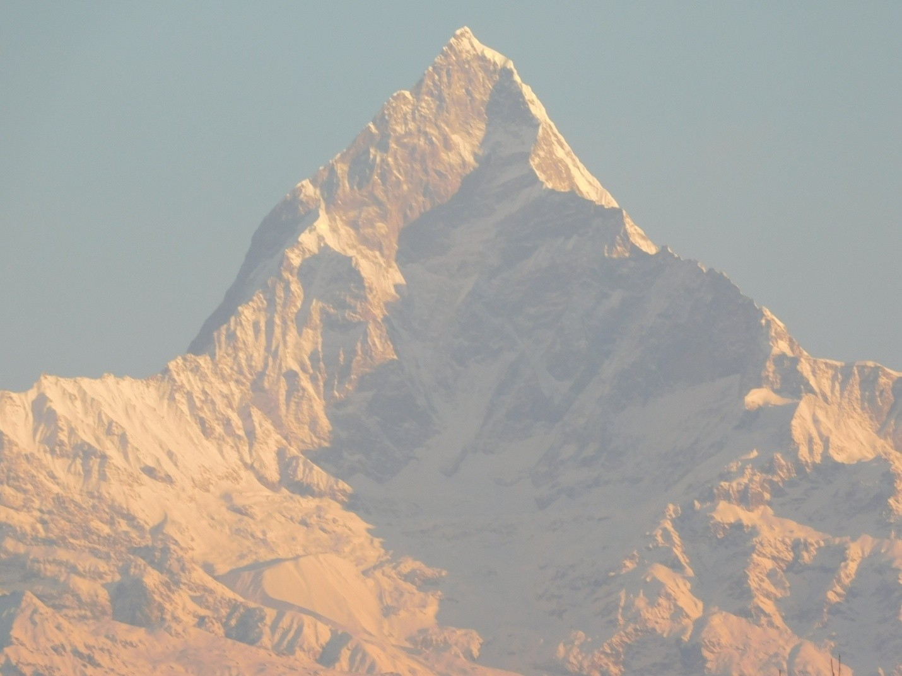
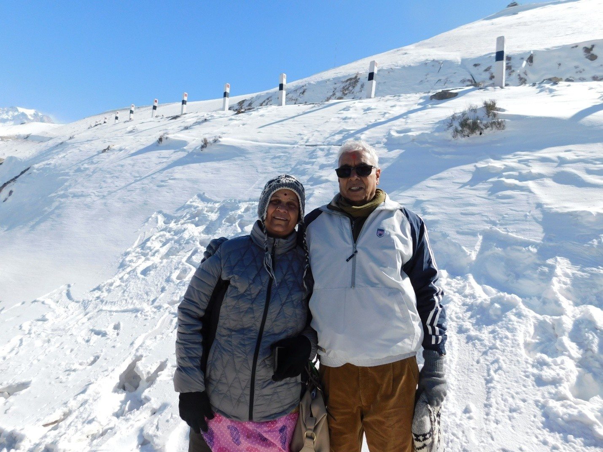
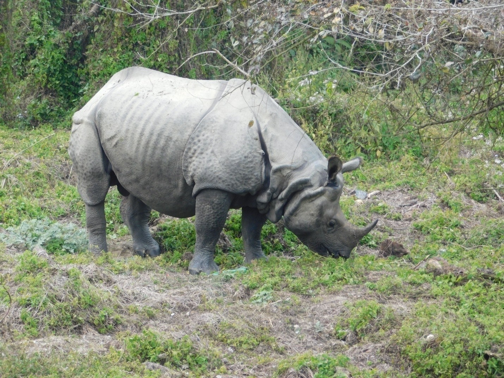
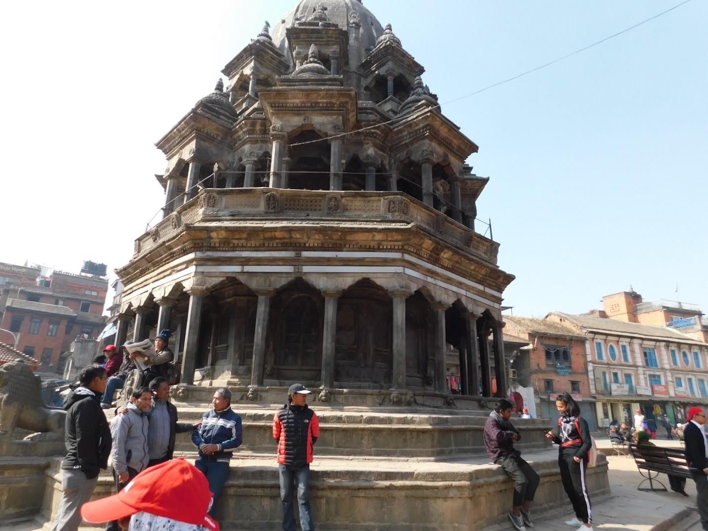

Introduction
We booked the Nepal tour through Kesari. It is a 10-day tour. The tour cost per person is Rs 62,000/- including hotel charges, flight fares, etc. The pickup point was Mumbai Domestic Airport.
Nepal is a small country located between India and China. It is still considered quite backward, lacking major industries. Their main resources are cultivation and tourism. This country has many natural resources, like abundant water, fertile lands, and mountain peaks with lots of wind flow, but still fails to make full use of them, perhaps due to a lack of qualified people. Some hydraulic power projects are there, done by other countries.
This country is a democratic nation and the only Asian country declared as a Hindu nation. The majority of people are Hindus (about 80%). The next major religion is Buddhism. Christians and Muslims are far fewer. Here Saturday is a weekly holiday. People work on the remaining six days.
Roads are narrow and bad. Cities are not well connected. Woolen things seem to be cheaper here. Also, Rudraksha is famous. Religious people buy 'Shaligram' here and perform regular pooja. This Shaligram is a black stone with a smooth surface, mostly oval-shaped, found in the sacred river Gandaki.
While shopping, we have to ascertain whether the cost is in Indian rupees or Nepalese. One hundred Indian rupees is equal to one hundred and sixty Nepalese rupees. Also, bargaining is rampant here. If they say Rs 100/-, you can bargain for Rs 40/- also. India and Nepal have a 15-minute time difference; Nepal time is 15 minutes ahead of Indian time.

This country’s national flag is very different. It is neither square nor rectangle but two right triangles joined together. Their national language is Nepali, and the script is Devanagari. People here speak English and Hindi also. Dussehra is their main festival. Other Hindu festivals like Diwali, Maha Shivaratri, etc., are also celebrated.
24/01/19: The Journey Begins
Since the flight was on the 25th early morning, we had to come to Mumbai on the 24th night. We left home after dinner around 8:30 pm. We came to the bus stop by auto and took a Volvo bus to Sion and from there we took an auto and reached Mumbai Domestic Airport almost at midnight.
The weather was pretty chill. Unlike the international airport, in this airport, there was no proper place to wait for 4-5 hours. Since we didn’t have tickets, we had to wait till 4:30 am for the Kesari representative. So that waiting time at the airport was pretty horrible.
25/01/19: Patna to Janakpur
The Kesari representative came around 4:30 am, and we collected our tickets and some eatables. Then we boarded the flight for Patna. The flight journey was unusually jerky. We landed at Jayaprakash International Airport around 7 am. Probably Patna Airport is the dirtiest one. Toilets were so dirty and unhygienic.
This is my first visit to Patna. I never imagined Patna would be so unclean and dirty! Even we did not get a moderately decent hotel for breakfast. We ate a few idlis (quality was poor, but the cost was at par with international airports) at a hotel close to the airport and continued our trip in a bus.
The weather was pretty chill. According to our itinerary, we had to visit Janakpur, Nepal first, where King Janaka ruled and brought up Sita. Janakpur is about 200 Km from Patna. We left Patna around 10 am and reached Janakpur around 8 pm! The road was horrible, and even the AC bus was in pretty bad shape.
Fortunately, the guide located a good hotel for lunch. Lunch was good. Throughout this 200 km journey, we could only see heaps of garbage, open drainages, poor houses, and almost all houses were incomplete constructions – no plastering or coloring.
When we crossed the border, I thought we had to fulfill certain formalities, but nobody asked us to show even our ID. Only the guide went to their cabin and perhaps handed over the list of people traveling to Nepal on the tour. Of course, we were carrying our passports, photos, and a few Xerox copies of the passport.
After a very long and tiresome journey, we reached Janakpur around 7:30 pm. We reached Hotel Welcome. Fortunately, this hotel was not bad. It was quite clean. We had dinner here around 9 pm. It was good. In Nepal generally, only vegetarian food is served in all hotels.
26/01/19: Janakpur to Kathmandu
Happy Republic Day! Last night we could sleep peacefully. Morning 6:30 there was a wakeup call. We got ready by 6:30. For breakfast, paratha and bread were there. After breakfast, we went to Sita Mandir (Janaki Mandir). This temple was close to the hotel, so we walked there.

This temple was constructed by a Nepal Queen in 1901. The total construction cost was around 9 Lakhs. So this temple is also called the "Nau Lakha Mandir". It is a spacious temple and looks beautiful. Mostly Mughal people were employed to construct this temple. Though it is a Hindu temple, the architecture is of the Mughal type.
A museum is also there within the temple premises depicting Janaka and Sita's associations. After the temple visit, we proceeded to Janakpur airport. It was so small and resembles a small railway station. There was no X-ray scanner here; we had to open our suitcases for them to check before boarding.

The airplane was like a toy plane. The traveling time from Janakpur to Kathmandu is about 25 minutes. We left Janakpur around 12:30 and reached Kathmandu around 1 pm.
After that, we came to a government office to take permission to go to Muktinath. We submitted Xerox copies of our passports and photographs. The fee was Rs 1000/- (Nepalese currency). After completing the formalities for going to Muktinath, we proceeded to Hotel Himalaya.
Our lunch was arranged in this hotel. After lunch, we got our booked room. The room in this hotel was nice, spacious with necessary amenities.

Around 4 pm we went to the Budhanilkantha Temple (Vishnu Temple). In this temple, Vishnu is in a sleeping posture. This temple was nice, and after worship, we returned to the room.
27/01/19: Manakamana & Pokhara
We got up around 6 am. After finishing the routine, we took breakfast. For breakfast, bread and some fruits were there. Then we left Kathmandu and proceeded to Pokhara. This is another city in Nepal. It is around 3000m above sea level.
On the way, about 100 km away from Kathmandu, a famous temple called Manakamana Temple is situated. It is over a mountain peak. A ropeway car is provided. The entire setup of the ropeway was done by Austria. The ropeway is beautiful. The scenery of the river Trishuli and the mountains is spectacular.
The ropeway is about a 20-minute travel. We reached the temple around 12:30. We had to stand in the queue. The queue was moving at a snail's speed. We stood for around an hour. Then we reached the sanctum and worshipped. It is a Devi temple. It is considered one of the 51 Shakti Peethas. Here people make a vow (Mannat) and after the desire is fulfilled, they give ‘Balidan’ to Devi. In front of the temple, goats are slaughtered and blood splashes. It was very cruel and horrible to see, that too in a sacred place.
After the temple visit, we had our lunch around 3 pm. Then we proceeded to Pokhara. From this temple, it is around a 3-hour journey. Around 7 pm we reached Hotel De Yatra Courtyard. The hotel was good and the room was quite spacious with all amenities. We stayed in this on the 27th night.
28/01/19: Attempt 1 to Jomsom & Pokhara Sightseeing
We got up around 4:30 am. After coffee and bath, we wore all special woolen clothes to travel to Muktinath. We left the hotel and reached the airport. After all the formalities we got the boarding pass for going to Jomsom. Initially, they announced that the flight was delayed due to bad weather at the destination. After an hour they announced that the flight was cancelled.
Then we left the airport and came to Fewa Lake. It is a huge lake. We went boating. In that lake, in the middle, there is a patch of land and a temple is there. This temple is called Tal Barahi Temple. We visited this temple. While boating we could see the mountain range of Annapurna.

Then we returned to the hotel. We did some shopping also. Around 12 we had our lunch. Lunch was very delicious. For lunch, we had Puri, bitter gourd deep fry, Paneer matar gravy, Mango pulp, and dal.
After lunch, we took rest till 3 pm and went to see Devi’s Falls. Then we roamed around the city and went to a temple called Bindhyabasini. We had to climb some 50 steps. In this temple, Devi, Shiva, Lakshmi Narayan, and Lord Ganesh all are there. From this temple, we saw the Annapurna mountain chain partly covered with ice. Because of bright sunlight, ice-covered peaks were glittering like silver.
29/01/19: Jomsom & The Muktinath Challenge
On the 29th we made the second attempt to go to Muktinath. We got up around 4:30 am and left the hotel around 6 after taking breakfast. Our flight was at 7:30 am from Pokhara. Till 8 am we were just waiting without any certainty. At last, the flight was ready to take off.
It is a small plane, a 15-seater. We cannot carry suitcases. Only small handbags can be carried. The plane took off and went in between two big mountain ranges of the Himalayas. Since the sun was bright and there were no clouds, we could see the peaks of these mountains. All were covered completely with ice. It was a beautiful scene. The travel was some 20 minutes. We reached Jomsom airport safely.
From there we went to our hotel and checked in. This hotel is very moderate with minimum basic requirements. In this place, there was no network. So our mobiles could not be used.
From Jomsom airport, Muktinath is about 20 km by road. We took a bus and started moving to Muktinath. After traveling 10 km, the bus could not go further due to heavy snow.
Some youngsters attempted to walk but returned after half a km. It was very chill and slippery.

In that place, a kilometer away just close to the Gandaki river, one more Narayanan temple is there. About 10 people from our group went and I was also one among them. After worshipping and seeing the river, we returned to the hotel by bus.
At night we had a simple dinner and went to bed early. The altitude of this place is 12,000 feet. Oxygen is less. Even some people struggled to breathe. Fortunately, we did not face any such problem. Because of the extreme chill, we didn’t have proper sleep though.
30/01/19: The Jomsom Ordeal
The previous night the temperature was very low. The hotel room was not provided with any room heater. Also, it is a low-oxygen region. It was almost a sleepless night. Most of the time, we had to ascertain whether the counterpart was breathing! Haha!
Around 6 am we got up. Water was almost in a frozen condition. We just rinsed our mouths, went to the dining hall, and had coffee. We left the hotel and walked to the airport with our handbags.
Jomsom was totally disconnected from all other places. No electricity, and no network. Airport people could not find out at what time the flight would arrive. In that pretty cold weather, we were sitting keeping our fingers crossed. The situation was very scary. All wanted to get out of that place to a safer place by any means. At 10 am, airport people announced that the flight to Pokhara was cancelled. So we didn't have any other alternative except to return to Pokhara by bus. Kesari arranged a bus.
Actually, from Jomsom to Pokhara there is no road. It is something like the ground is leveled with stones. The bus can go at a speed of 10 – 15 km per hour with lots of jerks. The distance is around 200 Km. That was really the most horrible bus travel in my life. At last around 8 pm, we reached Pokhara, same hotel De Yatra.
We checked in and took a bath in hot water. By that time dinner was ready. For dinner, they made chapati, some subji, Khichdi, and kadhi. The dinner was really superb. We had a sound sleep, perhaps due to the good and safe environment.
31/01/19: Chitwan National Park
Morning around 6 we got up and got ready to proceed to Chitwan, some 5 hours journey. The road was not bad. Also on both sides, there was beautiful scenery. Also, river Narayani close to the highway made the travel more pleasant. We reached Chitwan around 1 pm. We checked in at Paradise Resort. The hotel is very moderate. The room is not at all in good shape. Even basic essentials are not provided in the room.

We paid Rs 3000 per head and went for a safari. It is about a 2-hour drive in the forest, called Chitwan National Park. We saw sambar, deer, peacocks, and rhinoceroses and returned to the hotel.
Also, we were taken to a cultural program, Tharu cultural dance. Tharu is a community settled in Nepal, who came from India. It was an hour dance program. After the program, we returned to the hotel.
01/02/19: Return to Kathmandu & Stupas
We had to get up early around 5:30 am. The night was quite chill. Since this hotel didn't have even basic necessities, we could not even take a proper bath. After breakfast, we left for Kathmandu. It is a 5-hour journey. The road was not bad. The weather was chill. On the way, we stopped for about 15 minutes for coffee. We reached Kathmandu around 12:30 pm. Before coming to Hotel Le Himalaya, we went to visit Swayambhunath Stupa.
This is considered one of the glorious Stupas. For this, we have to climb about 150 steps. This is really nice to watch. Then we came to the Hotel and had lunch. Around 3 pm we left to visit Boudha Stupa. It is in the city only. We did Parikrama to the stupa and went to the famous Pashupatinath Temple.
This is one of the most important temples for Hindus. This is a Shiva temple. But in place of Linga, the deity is Pashupatinath with five faces. Four entrances are there and from any one entrance, we can see the deity. We waited there for evening Aarti. After Aarti, we stood in the queue, and closely we could see the deity. After the visit to this temple, some people did some shopping also. Then we returned to the hotel and had dinner.
02/02/19: Patan & Bhaktapur
On 2nd February we got up leisurely around 6:30 am. We had our breakfast around 8 am. We left the hotel by 10 to see Patan Durbar Square.

Here lots of temples are there. First, we visited a Living God (Kumari). A girl child of 6 years old is believed to be a living God. In her horoscope, some special features are seen, and so the child is being worshipped here. Then we saw some groups of temples with lots of architectural beauty. These temples are very old and considered one of the world Heritages and come under UNESCO. One Krishna temple is also here. Another one is a Golden temple. This visit was about 2 hours and we returned to the hotel for lunch.
Around 3 pm again we started to visit Bhaktapur Durbar Square. This place is also full of old beautiful temples with lots of wooden carvings. Here also one golden gate is there. These groups of temples are also one among the world heritages. After this visit, we returned to the hotel.
03/02/19: Final Blessings & Departure
Last day of the tour. Morning around 8 am we left for Pashupatinath Temple. We booked for Abhishekam by paying Rs 690/-. A small queue was there and for each couple, they did Abhishekam to Pashupatinath and offered Prasadam. One Rudraksha mala was also offered to each family.
After the visit to the temple, we returned to the Hotel. By 11:45 we left for Kathmandu airport to take the flight to Mumbai. The flight was at 3 pm.
A Visa Lesson: After obtaining the boarding pass, we proceeded for immigration. Few of our group showed their Election card for ID proof and went for boarding. In our turn, we showed the passport and the officer searched for an entry endorsement. When we entered Nepal by road, our bus was stopped at the check post but no one asked for our ID proof or made any endorsement. This was explained to airport officials of Kathmandu, but they insisted that we should have got the endorsement on the passport. We had to pay $2 each as a one-day visa fee. We paid the amount and then we were allowed to board the flight. So it is wise to show only the Election ID card everywhere, instead of the Passport.
From Kathmandu to Mumbai it is around 3 hours journey. We landed in Mumbai around 6 pm. Fortunately, immigration counters were not crowded. So we could get the arrival stamp on our passport and then collected our baggage and came out of the airport and took a cab to Pune. Again we were lucky, there was no heavy traffic and we reached Pune by 9:30 pm.
"From the ancient temples of Janakpur to the snowy challenges of Jomsom, this journey through Nepal was a test of faith and endurance. We witnessed the grandeur of the Himalayas, the devotion at Pashupatinath, and the architectural marvels of Patan and Bhaktapur. Despite the cold, the rugged roads, and the travel hurdles, the spiritual vibrations of this beautiful land left us with memories that will last a lifetime."